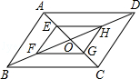
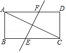
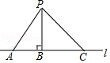
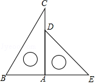
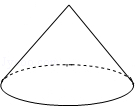
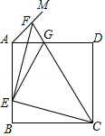

-
$\vert -6 \vert=$（ ）
- $-6$
- $6$
- $-\frac 1 6$
- $\frac 1 6$
-
广州正稳步推进碧道建设，营造“水清岸绿、鱼翔浅底、水草丰美、白鹭成群”的生态廊道，使之成为老百姓美好生活的好去处．到今年底各区完成碧道试点建设的长度分别为（单位：千米）：5，5.2，5，5，5，6.4，6，5，6.68，48.4，6.3，这组数据的众数是（ ）
- 5
- 5.2
- 6
- 6.4
-
下列运算正确的是（ ）
- $-3-2＝-1$
- $3\times(-\frac{1}{3})^2=-\frac{1}{3}$
- $x^3 \cdot x^5=x^{15}$
- $\sqrt{a} \cdot \sqrt{ab}=a\sqrt{b}$
-
平面内，⊙O的半径为1，点P到O的距离为2，过点P可作⊙O的切线条数为（ ）
- 0条
- 1条
- 2条
- 无数条
-
甲、乙二人做某种机械零件，已知每小时甲比乙少做8个，甲做120个所用的时间与乙做150个所用的时间相等，设甲每小时做x个零件，下列方程正确的是（ ）
- $\frac{120}{x}=\frac{150}{x-8}$
- $\frac{120}{x+8}=\frac{150}{x}$
- $\frac{120}{x-8}=\frac{150}{x}$
- $\frac{120}{x}=\frac{150}{x+8}$
-

如图，▱ABCD中，AB＝2，AD＝4，对角线AC，BD相交于点O，且E，F，G，H分别是AO，BO，CO，DO的中点，则下列说法正确的是（ ）
- EH＝HG
- 四边形EFGH是平行四边形
- AC⊥BD
- △ABO的面积是△EFO的面积的2倍
-
若点A（﹣1，y1），B（2，y2），C（3，y3）在反比例函数$y=\frac{6}{x}$的图象上，则y1，y2，y3的大小关系是（ ）
- $y_3＜y_2＜y_1$
- $y_2＜y_1＜y_3$
- $y_1＜y_3＜y_2$
- $y_1＜y_2＜y_3$
-

如图，矩形ABCD中，对角线AC的垂直平分线EF分别交BC，AD于点E，F，若BE＝3，AF＝5，则AC的长为（ ）
- $4\sqrt5$
- $4\sqrt3$
- 10
- 8
-
关于x的一元二次方程$x2-（k-1）x-k+2＝0$有两个实数根$x_1，x_2$，若$（x_1-x_2+2）（x_1-x_2-2）+2x_1x_2＝-3$，则k的值（ ）
- 0或2
- -2或2
- -2
- 2
-

如图，点A，B，C在直线l上，PB⊥l，PA＝6cm，PB＝5cm，PC＝7cm，则点P到直线l的距离是______cm．
-
代数式$\frac{1}{\sqrt{x-8}}$有意义时，x应满足的条件是______．
-
分解因式：$x^2y+2xy+y＝$______.
-

一副三角板如图放置，将三角板ADE绕点A逆时针旋转α（0°＜α＜90°），使得三角板ADE的一边所在的直线与BC垂直，则α的度数为______．
-

如图放置的一个圆锥，它的主视图是直角边长为2的等腰直角三角形，则该圆锥侧面展开扇形的弧长为______．（结果保留π）
-

如图，正方形ABCD的边长为a，点E在边AB上运动（不与点A，B重合），∠DAM＝45°，点F在射线AM上，且AF=$\sqrt2$BE，CF与AD相交于点G，连接EC，EF，EG，则下列结论：
- ∠ECF＝45°；
- △AEG的周长为$（1+\frac{\sqrt2}{2}）a$;
- $BE^2+DG^2＝EG^2$;
- △EAF的面积的最大值$\frac{1}{8}a^2$．
其中正确的结论是______．（填写所有正确结论的序号）